Despite her admiration for a number of current and historical fiber and quilting artists, it took many years and a lot of lovingly stern friends for DJ to see herself as an artist. Even once she did, there was always a lot of self-deprecation. After many rewards and recognitions, she started to come around to seeing herself as accomplished -- imposter syndrome is a beast! -- and in 2007, she was chosen as the keynote speaker for the Empty Spools Quilting Retreat and Seminar at Asilomar, a tremendous honor for a quilter, and one that meant the world to DJ.
One of her sons being a DJ in college introduced her to techno, trip hop, and electropop, which she loved to listen to while quilting. She was a huge fan of The Crystal Method. She found immense joy and intellectual stimulation in the geometries of traditional quilting, as well as the challenges of "painting with fabric" for the nontraditional designs.
| Thumbnail | Title | Year | Size | Notes |
|---|---|---|---|---|
| 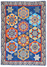 | Blue Hexagons | 2015 | 63" x 89" | Although she was a student of humanity and spirituality, DJ was also fascinated by mathematics, and you have to be comfortable with calculations to do quilting. The hexagon was one of her favorite shapes -- she said she thought about sacred geometry whenever she quilted, but especially when working with hexagons. |
| 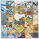 | California Star | 2011 | 76" x 76" | |
| 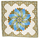 | Camelot | 2015 | 77" x 77" | We often teased DJ about her taste in wall colors and fabrics in her home decor, lots of deep jewel tones and rich velvets and brocades, "like a medieval princess." |
| Cinco de Mayo | ??? | N/A | ||
| 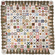 | Dear Jane Civil War quilt | ??? | N/A | A tribute to a famous quilt completed in 1863 by artist Jane Blakeley Stickle |
| 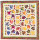 | Colorful Maples | ??? | N/A | |
| Elephant Spring | ??? | N/A | ||
| 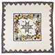 | Eureka | 2014 | 74" x 74" | |
| 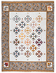 | Fall Into Winter | 1998 | 74" x 100" | |
| 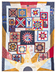 | It's a Grand Old Flag | 2001 | 80" x 106" | The center is a fabric that DJ bought in 1986 and had been holding onto, waiting for the right inspiration! |
| 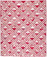 | Lady in Red | 2015 | 73" x 87" | |
| 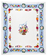 | Marc and Dana's Wedding Quilt | 2010 | 83" x 98" | We had asked DJ to make us a duvet cover for a wedding present, which she did, consulting us on colors and imagery. However, on the sly, she was creating this magnificent quilt as our "real" wedding gift. We didn't have a clue until we went to the annual Wine Country Quilt Show a few weeks before our wedding! It had a place of honor just inside the entrance, as the first quilt to be viewed. |
| 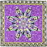 | Nesting Dolls | 2011 | N/A | I found a cute kitchen towel that I bought for DJ, as I knew she liked Russian nesting dolls, sometimes known as matroyshkas. A few months later, she surpised me with this beautiful lap quilt that the tea towel had inspired her to create. I love it and use it all the time. |
| 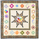 | Star With Blocks | ??? | N/A |